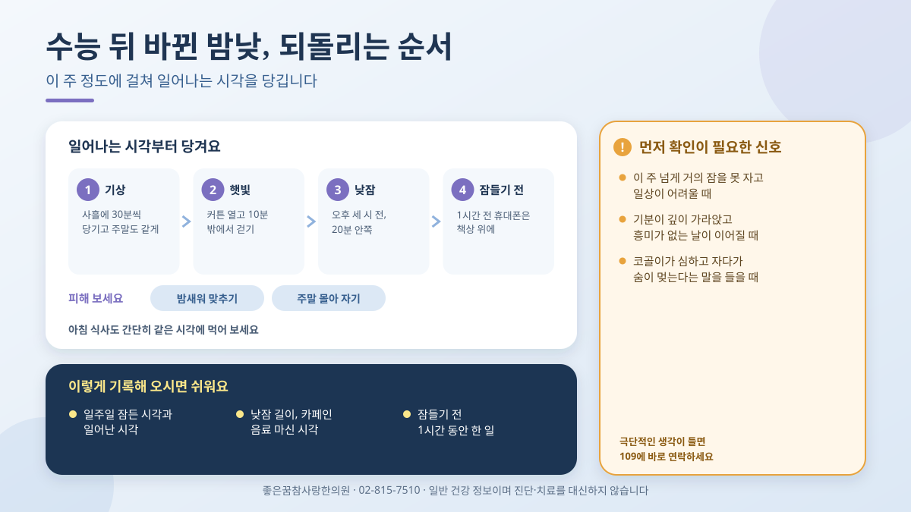

이종호 한의사 감수좋은꿈참사랑한의원 대표원장 (한의사 면허번호 19769)발행 2026-11-25 · 수정 2026-11-25
이 글의 차례
수능 뒤 밤낮이 바뀌었다면 잠드는 시각보다 일어나는 시각을 먼저 정하고 조금씩 당기는 것이 리듬을 되돌리는 순서입니다. 긴 시험 준비가 끝나면 긴장이 풀리면서 새벽까지 휴대폰을 보고 정오가 넘어 일어나는 날이 이어지기 쉽습니다. 노량진에서 다음 시험이나 면접을 준비하는 수험생도 시험 직후 같은 고민을 자주 이야기합니다.
대개 두 주 정도에 걸쳐 조금씩 당기는 것을 목표로 잡고, 그 사이에도 기분이 깊이 가라앉거나 거의 잠을 못 자는 날이 이어진다면 기다리지 않고 상담을 권합니다.
왜 시험이 끝나면 밤낮이 바뀌기 쉬울까요
- 정해진 등교나 학원 시간이 사라지면 일어나는 시각이 쉽게 늦어집니다.
- 평일과 주말의 구분 없이 지내다 보면 요일 감각이 흐려져 리듬을 붙잡을 기준이 사라지기 쉽습니다.
- 밤늦게 보는 밝은 화면은 잠드는 시각을 뒤로 미는 데 영향을 줄 수 있습니다.
- 낮에 햇빛을 보고 움직이는 시간이 줄면 밤에 졸음이 덜 올 수 있습니다.
- 늦게 일어나면 아침 식사가 사라지고 첫 끼가 오후로 밀려, 몸의 시계도 함께 늦어지기 쉽습니다.
- 오래 쌓인 긴장이 한꺼번에 풀리면서 낮잠이 길어지기도 합니다.
- 결과 발표와 원서 접수를 기다리는 걱정이 밤마다 이어지기도 합니다.
먼저 이렇게 여쭙니다
- 요즘 몇 시에 잠들고 몇 시에 일어나나요?
- 낮잠을 자나요? 잔다면 몇 시에 얼마나 자나요?
- 잠들기 전 한 시간 동안 주로 무엇을 하나요?
- 카페인 음료를 하루 몇 잔, 몇 시까지 마시나요?
- 결과 발표나 면접처럼 앞으로 정해진 일정이 있나요?
- 기분이 가라앉거나 아무것도 하기 싫은 날이 이어지나요?

일상에서 먼저 해 볼 수 있는 것
- 일어나는 시각을 하루나 이틀에 15~30분씩 당기고 주말에도 같게 맞추기
- 일어나면 커튼을 열고 10분이라도 밖에 나가 걷기
- 낮잠은 오후 세 시 전에 20분 안쪽으로 줄이기
- 오후 늦게는 커피와 에너지 음료를 줄이기
- 저녁은 잠들기 서너 시간 전에 마치고 늦은 야식은 피하기
- 저녁에는 방 조명을 조금 어둡게 하고, 잠자리에 드는 시각 대신 불 끄는 시각을 정해 두기
- 잠들기 한 시간 전에는 휴대폰을 책상 위에 두고 침대에서 떨어뜨리기
- 아침 식사를 간단히라도 같은 시각에 먹기
상황별 예시
- 예를 들어 새벽 네 시에 자고 오후 한 시에 일어나는 생활이 일주일째인 고3 수험생의 경우, 일어나는 시각을 하루나 이틀에 30분씩 당겨 두 주 뒤 아침 여덟아홉 시를 목표로 잡고, 일어나면 바로 커튼을 열고 밖을 10분 걷는 것부터 시작해 볼 수 있습니다.
- 예를 들어 노량진에서 다음 시험이나 면접을 준비하는 수험생이 시험 직후 며칠 쉬다가 밤낮이 바뀐 경우, 학원이나 독서실에 도착하는 시각을 먼저 정해 두면 일어나는 시각을 붙잡는 데 도움이 될 수 있습니다.
- 예를 들어 자녀의 수험 기간 내내 늦은 밤까지 함께 깨어 있던 부모도 시험이 끝난 뒤 잠이 흐트러질 수 있습니다. 가족이 같은 기상 시각과 아침 식사 시각을 함께 지키면 서로 리듬을 맞추기 쉽습니다.
스스로 점검해 보세요
- 일주일 동안 잠든 시각과 일어난 시각을 적어 보았다.
- 잠들기 전 한 시간 동안 휴대폰을 얼마나 보는지 확인했다.
- 낮잠이 오후 세 시 넘어서까지 이어지지 않는지 살폈다.
- 첫 끼를 먹는 시각이 날마다 비슷한지 돌아보았다.
- 카페인 음료를 마지막으로 마신 시각을 적었다.
- 기분이 가라앉거나 아무것도 하기 싫은 날이 며칠째인지 세어 보았다.
얼마나 지켜보고 언제 상담할까요
- 일어나는 시각을 당기며 한두 주 사이 잠드는 시각도 조금씩 따라 당겨진다면 지금 방법을 이어 가며 지켜볼 수 있습니다.
- 두 주가 지나도 새벽 서너 시가 되어야 잠들거나, 일찍 일어나도 낮에 계속 멍하다면 상담을 권합니다.
- 잠은 자는데 아침마다 개운하지 않고 코골이가 심하다는 말을 듣는다면 수면 검사가 가능한 의료기관을 먼저 확인합니다.
- 기분이 깊이 가라앉고 좋아하던 일에도 흥미가 없는 날이 두 주 넘게 이어지거나 극단적인 생각이 든다면, 기다리지 않고 바로 도움을 요청합니다.
한의원에서 함께 살필 수 있는 경우
- 이 주 넘게 새벽 서너 시가 되어야 잠드는 날이 이어지는 경우 하루 리듬과 긴장을 함께 살핍니다.
- 자도 개운하지 않고 낮에 계속 멍한 경우 잠의 깊이와 소화를 함께 살핍니다.
- 시험 뒤 허탈함과 불안이 함께 있는 경우 마음의 긴장도 이어서 여쭙니다.
좋은꿈참사랑한의원에서는 첫 방문 때 요즘 잠드는 시각과 일어나는 시각, 낮잠, 식사 시각, 시험 뒤 마음 상태를 차례로 듣고 맥부터 짚어 봅니다. 필요하다고 판단될 때 설진·복진을 더해 몸의 긴장과 소화 상태를 함께 살피고, 상태에 맞춰 침이나 한약 상담 등을 정합니다.
귀가 전에는 다음 방문까지 지킬 기상 시각과 수면 기록 방법을 함께 정하고, 다시 오시면 그 기록을 보며 이어서 조정합니다. 보호자와 함께 오시면 집에서의 생활 이야기도 함께 나누기 쉽습니다.
이렇게 기록해 오시면 상담이 쉬워집니다
- 일주일 동안 잠든 시각과 일어난 시각
- 낮잠 시각과 길이, 카페인 음료를 마신 시각
- 잠들기 전 한 시간 동안 한 일
- 아침에 일어났을 때 개운한 정도(0~10)
- 기분과 식욕의 변화
- 결과 발표나 면접 같은 앞으로의 일정
- 복용 중인 약이나 영양제
이런 증상은 먼저 확인이 필요합니다
- 이 주 넘게 거의 잠을 못 자고 일상이 어려운 경우
- 기분이 깊이 가라앉고 좋아하던 일에도 흥미가 없는 날이 이어지는 경우
- 낮에 참기 어려울 만큼 갑자기 잠드는 일이 되풀이되는 경우
- 코골이가 심하고 자다가 숨이 멎는다는 말을 들은 경우(수면 검사가 가능한 의료기관 확인)
복용 중인 수면제나 신경안정제는 처방한 의사와 상의 없이 줄이거나 끊지 않습니다. 기분이 깊이 가라앉거나 극단적인 생각이 든다면 ☎ 109에 바로 도움을 요청하세요.
함께 읽으면 좋은 글
- 수능이 끝났는데 후련하지 않고 허탈하고 불안할 때는 어떻게 살피나요?
- 수능이 끝난 뒤 흐트러진 생활 리듬은 어떻게 다시 잡나요?
- 잠이 보약이라는 말은 어떤 뜻인가요?

여쭙는 것
- 요즘 몇 시에 잠들고 몇 시에 일어나나요?
- 낮잠을 자나요? 잔다면 몇 시에 얼마나 자나요?
- 잠들기 전 한 시간 동안 주로 무엇을 하나요?
생활에서 해 볼 것
- 일어나는 시각을 하루나 이틀에 15~30분씩 당기고 주말에도 같게 맞추기
- 일어나면 커튼을 열고 10분이라도 밖에 나가 걷기
- 낮잠은 오후 세 시 전에 20분 안쪽으로 줄이기
한의원에서 함께 살필 것
- 이 주 넘게 새벽 서너 시가 되어야 잠드는 날이 이어지는 경우 하루 리듬과 긴장을…
- 자도 개운하지 않고 낮에 계속 멍한 경우 잠의 깊이와 소화를 함께 살핍니다.
- 시험 뒤 허탈함과 불안이 함께 있는 경우 마음의 긴장도 이어서 여쭙니다.
먼저 확인이 필요한 신호
- 이 주 넘게 거의 잠을 못 자고 일상이 어려운 경우
- 기분이 깊이 가라앉고 좋아하던 일에도 흥미가 없는 날이 이어지는 경우
- 낮에 참기 어려울 만큼 갑자기 잠드는 일이 되풀이되는 경우
한눈에 보는 표
| 구분 | 핵심 |
|---|---|
| 여쭙는 것 | 요즘 몇 시에 잠들고 몇 시에 일어나나요? 낮잠을 자나요? 잔다면 몇 시에 얼마나 자나요? |
| 생활에서 해 볼 것 | 일어나는 시각을 하루나 이틀에 15~30분씩 당기고 주말에도 같게 맞추기 일어나면 커튼을 열고 10분이라도 밖에 나가 걷기 |
| 한의원에서 함께 살필 것 | 이 주 넘게 새벽 서너 시가 되어야 잠드는 날이 이어지는 경우 하루 리듬과 긴장을 함께 살핍니다. 자도 개운하지 않고 낮에 계속 멍한 경우 잠의 깊이와 소화를 함께 살핍니다. |
| 먼저 확인이 필요한 신호 | 이 주 넘게 거의 잠을 못 자고 일상이 어려운 경우 기분이 깊이 가라앉고 좋아하던 일에도 흥미가 없는 날이 이어지는 경우 |
자주 묻는 질문
하루 밤을 새우면 리듬이 돌아오나요?
밤을 새우는 방법은 다음 날 낮잠으로 이어져 오히려 더 흔들리는 분이 많습니다. 일어나는 시각을 조금씩 당기는 쪽이 무리가 적습니다.
주말에 몰아서 자도 되나요?
평일과 두 시간 넘게 차이 나면 다시 밀리기 쉽습니다. 주말에도 한 시간 안쪽으로 맞춰 보세요.
잠이 안 올 때 침대에 계속 누워 있어야 하나요?
20분쯤 지나도 잠이 오지 않으면 잠시 일어나 어둑한 곳에서 조용히 있다가 졸릴 때 다시 눕는 방법도 있습니다. 이때도 휴대폰 화면은 멀리 두세요.
부모가 깨워도 못 일어나요. 어떻게 돕나요?
꾸중보다 아침 햇빛과 아침 식사 같은 신호를 함께 만들어 주시길 권합니다. 며칠 기록을 가지고 함께 오시면 이야기가 구체적이 됩니다.
수면 보조제를 먹어 봐도 될까요?
수면 보조제는 복용 전에 의사나 약사와 먼저 상의하시길 권합니다. 이미 드시는 약이나 영양제가 있다면 진료 때 함께 알려 주세요.
좋은꿈참사랑한의원은 재진 때 지난번 이야기부터 이어서 여쭙니다. 진료시간과 예약은 오시는 길에서 확인하세요.
어디서 상담받을 수 있나요?
좋은꿈참사랑한의원은 서울 동작구 만양로2길 2 신성빌딩 3층·5층(서울 동작구 상도동, 7호선 상도역 3번 출구 근처)에 있습니다. 한의사 3명(이종호 대표원장, 조영기 수석진료원장, 정원영 진료원장)이 진료합니다. 진료시간은 평일 09:30~20:00(점심 13:00~14:00), 토·일·공휴일 09:30~15:00이며, 방문 전 전화로 확인을 권합니다. 예약은 네이버 예약, 카카오톡 상담, 전화 02-815-7510로 받습니다.
이 글은 일반적인 건강 정보이며 개인의 진단이나 치료를 대신하지 않습니다. 증상이 있거나 복용 중인 약이 있다면 진료를 통해 확인하세요. 치료 효과는 개인마다 다를 수 있습니다.
작성 기준: 일반적으로 알려져 있는 건강 정보를 참고해 정리했습니다(대표원장 감수). 증상 기록은 1~2주 동안 하루 1회, 비슷한 시간에 적어 오시면 지난 상태와 비교하기 쉽습니다.